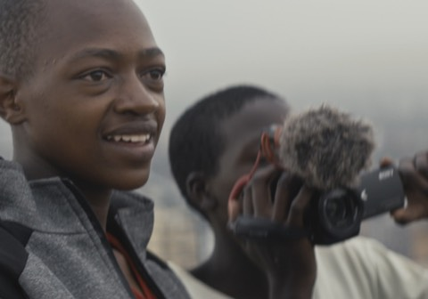

About the film
STOLEN DAUGHTERS: KIDNAPPED BY BOKO HARAM revisits a shocking story that made global headlines. In 2014, 276 Nigerian school girls were kidnapped from a school in Chibok, Northern Nigeria, and hidden in the vast Sambisa forest for three years by Boko Haram, a violent Islamic insurgent movement. Granted exclusive access to the 82 girls who were freed last year and taken to a secret government safe house in the capital of Abuja, the film explores how the young women might adapt back to life after having experienced such trauma, and how the Nigerian government is navigating, and at times commandeering, their re-entry into society. An HBO Documentary Films Release.
At the festival
- 2018 Thursday, October 11, 2018 · 6:00 PM · Naval Heritage CenterPost screening discussion with director Karen Edwards and producer Sasha Achilli, moderated by Laura Blumenfeld.
Sessions about this film
- 2018 · Thu Oct 11 · 1:15 PMPanelFraming Trauma: The Crises of WitnessingSasha Joelle Achilli, Karen Edwards, Marilyn Ness, Elana Newman, Stephanie Wang-Breal
More films on these topics
 Crime & ParodyWill Thwaites2026 · 88 min
Crime & ParodyWill Thwaites2026 · 88 min Kikuyu LandAndrew H. Brown, Bea Wangondu2026 · 93 min
Kikuyu LandAndrew H. Brown, Bea Wangondu2026 · 93 min KhartoumIbrahim Snoopy Ahmad, Timeea Mohamed Ahmed, Rawia Alhag2025 · 82 min
KhartoumIbrahim Snoopy Ahmad, Timeea Mohamed Ahmed, Rawia Alhag2025 · 82 min Teaching AmericaAnurima Bhargava2025 · 20 min
Teaching AmericaAnurima Bhargava2025 · 20 min
Searching for AmaniNicole Gormley, Debra Aroko2024 · 80 min Dust to DustKôsai Sekine2024 · 89 min
Dust to DustKôsai Sekine2024 · 89 min